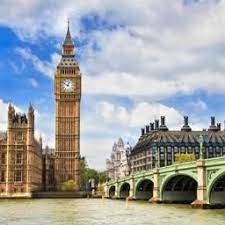
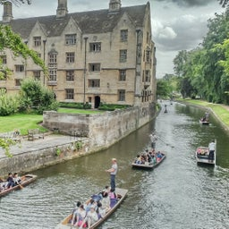

Best Time to Visit The United Kingdom
If you love Christmas as much as I do, you’ll want to visit England during the winter months. During December, the country turns into a winter wonderland, and you’ll find streets lined with decorations and massive Christmas markets.
For some seriously good deals at some of the top department stores, plan your trip to England in January. After the end-of-year rush, almost all the shops slash their prices and have massive sales to welcome in the New Year.
3Places to Visit in England (That Aren’t London)
Cornwall - With some of the United Kingdom’s most beautiful beaches and best-preserved ancient landmark Cornwall is a top destination for locals and tourists alike.
Cambridge - Another fierce debate amongst the British is for the honor of the most beautiful university town. Cambridge and Oxford are both legendary institutions with stunning architecture and rich history. If you can only visit one, I’d opt for Cambridge. The lush green meadows that surround and the grassy riverside college gardens (or Backs as they’re called) create a tranquil atmosphere that only adds historical and cultural draws.
manchester - At the heart of the Industrial Revolution, this northern city has a rich history and line of invocation that changed our culture forever. Wander through the collection of (usually free!) museums around the city to learn the cultural, musical, and artistic impact this often underrated city has made.
What to Expect in the U.K
Language: The main language spoken in England is English.
Currency: The currency in England is the British Pound. 1 USD is equivalent to about 0.75 GBP.
Credit Cards and ATMs: There are plenty of ATMs around England’s big and small cities. Most machines will accept Cirrus, Maestro and Visa cards. Credit cards and debit cards are used everywhere in Britain and are the easiest way to pay for purchases.
Plugs: The plugs in England are type G. The standard voltage is 230 V, and the standard frequency is 50Hz. I recommend buying a universal adapter (make sure it has surge protection) and using a converter for hairdryers and hot tools.
Safety: England is considered one of the safest countries in the world. Violent crime is low, and as a solo female traveler, you shouldn’t run into any problems while exploring England. However, always take precautions and be aware of your surroundings to avoid anyone who might try to take advantage of you being in an unfamiliar place.